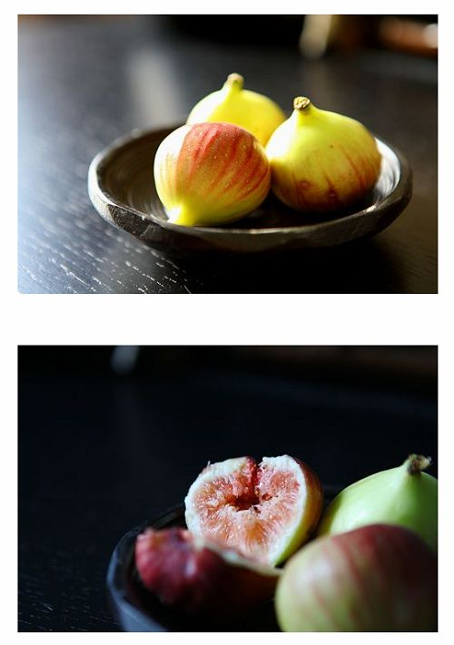

无花果的味道。 @ Sep 01, 2010
箱子送给我三颗无花果，她自家种的。对于无花果的认知来源于小时侯吃的无花果干，被制成梅子干果蜜饯类的零食，细丝状，夹着白色粉末，装在咖啡色图案的塑料袋里出售。这是我第一次吃新鲜的无花果，也是第一次看到它原本的摸样，掰开果肉，里面.......象是无数的小细牙，吃起来极其绵软柔滑，微甜。
我小心翼翼地吃了一颗，下午上班带了一颗给我最要好的同事，她也没吃过新鲜的无花果。给她之后我等了半小时，然后打电话过去问：“吃了吗？”
“吃了。”
“怎么样？”
“软软的，没味道。”
“怎么会，有点甜的味道啊。”
“恩，是有点，就一点点，呵呵。”
我好开心啊。

11 Responses to “无花果的味道。”
2010-09-01
比较起来无花果干比新鲜的好吃。
2010-09-01
一度极其迷恋无花果干，牙不好以后，我就不太敢吃了。上次在农场也吃到了新鲜的，还有白浆汁流下来，皮不太好剥，据说没有熟透，但是肉还是甜的。清香。
2010-09-01
不要剥皮，直接从中间掰开，从里面吃果肉更方便。箱子教的，这方法不错，呵呵~
2010-09-01
不得不佩服你的器材啊~
2010-09-01
无花果要等熟透了，软软的，看起来烂烂的才好吃。
2010-09-01
每天只有一两颗熟的，希望明年更丰收啊。
2010-09-01
这个无花果（fig）加上goat cheese，放在小饼干上，是appetizer(餐前菜？），可以在网上找到怎么做。我做的是无花果酱和goat cheese一起，有点甜，很好吃很好吃。。
2010-09-02
喜刷刷，机器好有P用啊，第一张对焦不清楚。
2010-09-02
我挺喜欢吃的，今年隔壁的邻居送了一包（20多个）也是自己家种的。我喜欢这种淡淡的味道，如同淡淡的生活，耐人寻味~~
2010-09-02
小时候外婆家门口也有无花果树，我们都是放在做饭快熟的时候放在上面蒸一下，很甜，很怀念：）
2010-09-07
小时候外公单位院子里边有好几课无花果树，那时候老吃，现在已经没了，想回味也难了～呵呵
Leave A Reply
存档只读，评论已关闭。